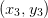
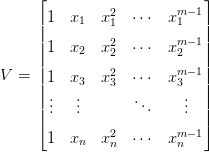
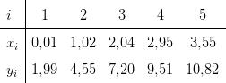

7.2 Ajuste linear geral
O problem geral de ajuste linear consiste em dada uma família  gerada pelo
conjunto de
gerada pelo
conjunto de  funções
funções  e um conjunto de
e um conjunto de  pontos
pontos
 ,
,  ,
,  ,
,  , calcular os coeficientes
, calcular os coeficientes  ,
,  ,
,  ,
,  tais que a função dada por
tais que a função dada por
 |
minimiza o resíduo
![∑n 2
R = [f (xi) - yi] .
i=1](main3015x.png) |
Aqui, a minimização é feita por todas as possíveis escolhas dos coeficientes  ,
,
 ,
,  ,
,  .
.
Com o objetivo de tornar a desenvolvimento mais claro, vamos escrever  como a soma dos resíduos parciais:
como a soma dos resíduos parciais:
![n
R = ∑ R , onde R := [f (x ) - y ]2 .
i=1 i i i i](main3021x.png) |
Do fato que  , temos que cada resíduo pode ser escrito
como
, temos que cada resíduo pode ser escrito
como
 |
A fim de encontrar o ponto de mínimo, resolvemos o sistema oriundo de
igualar a zero cada uma das derivadas parciais de  em relação aos
em relação aos  coeficientes
coeficientes  , i.e. devemos resolver:
, i.e. devemos resolver:

Dividindo cada equação por 2 e escrevendo na forma matricial, obtemos
 , onde a matriz
, onde a matriz  é dada por:
é dada por:

 e
e  , por:
, por: 
Agora, observamos que  e
e  , onde a matriz
, onde a matriz  é dada
por:
é dada
por:
 |
e é o vetor coluna  ,
,
Então, o problema de ajuste se reduz a resolver o sistema linear  , ou
, ou
 . Este sistema linear tem solução única se a matriz
. Este sistema linear tem solução única se a matriz  for inversível.
O teorema a seguir mostra que isto acontece sempre a matriz
for inversível.
O teorema a seguir mostra que isto acontece sempre a matriz  possui posto
possui posto
 , ou seja, o número de linhas linearmente independentes for igual ao número de
colunas.1
, ou seja, o número de linhas linearmente independentes for igual ao número de
colunas.1
Teorema 7.2.1. A matriz  é quadrada de ordem
é quadrada de ordem  e é
inversível sempre que o posto da matriz
e é
inversível sempre que o posto da matriz  é igual a número de colunas
é igual a número de colunas  .
.
 é inversível, precisamos mostrar que se
é inversível, precisamos mostrar que se
 é um vetor de ordem
é um vetor de ordem  e
e  , então
, então  . Suponha, então, que
. Suponha, então, que
 , isto é,
, isto é,  . Tomando o produto interno da expressão
. Tomando o produto interno da expressão
 com
com  , temos:
, temos:

 implica obrigatoriamente
implica obrigatoriamente  . Como o posto de
. Como o posto de  é
igual ao número de colunas,
é
igual ao número de colunas,  precisar ser o vetor nulo.
precisar ser o vetor nulo.

Observação 7.2.1. Este problema é equivalente a resolver pelo métodos dos mínimos quadrados o seguinte sistema linear:
 |
O caso de ajuste de um reta para um conjunto de pontos é um caso particular de ajuste linear.


Solução. O problema consiste em ajustar uma função da forma
 no conjunto de pontos dados. Notamos que
no conjunto de pontos dados. Notamos que  é uma
função da família gerada pelo conjunto de funções
é uma
função da família gerada pelo conjunto de funções  .
Então, aplicando o procedimento acima, temos que o vetor dos coeficientes
.
Então, aplicando o procedimento acima, temos que o vetor dos coeficientes
 é solução por mínimos quadrados do sistema linear
é solução por mínimos quadrados do sistema linear  ,
onde:
,
onde:
 |
Ou seja, é a solução do sistema  dado por
dado por
 |
A solução desse sistema é  e
e  . A Figura 7.2,
apresenta um gráfico dos pontos e da reta ajustada.
. A Figura 7.2,
apresenta um gráfico dos pontos e da reta ajustada.


Exemplo 7.2.2. Encontre a função  que
melhor se ajusta pelo critérios dos mínimos quadrados aos seguintes pontos
dados
que
melhor se ajusta pelo critérios dos mínimos quadrados aos seguintes pontos
dados
 |
Solução. Pelo procedimento visto nesta seção, temos que os coeficientes  e
e
 são dados pela solução por mínimos quadrados do seguinte sistema linear
são dados pela solução por mínimos quadrados do seguinte sistema linear

 |
cuja matriz de coeficientes  é:
 |
Então, a solução por mínimos quadrados é
|
|
Ou seja,  é a função ajustada ao
conjunto de pontos dados. A Figura 7.3 apresenta o gráfica de  e dos pontos
dados.
e dos pontos
dados.
Em Python, podemos computar os coeficientes da função  da seguinte
forma:
da seguinte
forma:
>>> yi = np.array([-153,64,242,284,175])
>>> V = np.array([np.sin(np.pi*xi),np.cos(np.pi*xi)]).transpose()
>>> a = ((np.linalg.inv((V.transpose()).dot(V))).dot(V.transpose())).dot(yi)

7.2.1 Ajuste polinomial
O ajuste polinomial é o caso particular do ajuste linear para funções polinomiais, isto é, funções do tipo
 |
Neste caso, a matriz  associada ao ajuste dos pontos
associada ao ajuste dos pontos  ,
,  ,
,
 ,
,  ,
,  é dada por:
é dada por:
 |
Então, os coeficientes  ,
,  , são dados pela solução do sistema
linear
, são dados pela solução do sistema
linear  :
:
 |

Exemplo 7.2.3. Entre o polinômio de grau 2 que melhor se ajusta aos pontos dados na seguinte tabela:
 |
Solução. Um polinômio de grau 2 pode ser escrito na seguinte forma:
 |
Assim, o problema se resume em encontrarmos a solução por mínimos quadrados do seguinte sistema linear:
 |
Ou, escrita na forma matricial, , onde:
|
|
A solução por mínimos quadrados é, então:
|
|
Ou seja, o polinômio de grau 2 que melhor ajusta os pontos dados no sentido de
mínimos quadrados é  . A
Figura 7.4 mostra o gráfico do polinômio ajustado e os pontos dados.
. A
Figura 7.4 mostra o gráfico do polinômio ajustado e os pontos dados.
Em Python, podemos computar os coeficientes do polinômio  da seguinte
forma:
da seguinte
forma:
>>> yi = np.array([-153,64,242,284,175])
>>> V = np.array([xi**2,xi**1,xi**0]).transpose()
>>> a = ((np.linalg.inv((V.transpose()).dot(V))).dot(V.transpose())).dot(yi)
Para fazermos o gráfico do polinômio e dos pontos, digitamos:
>>> plt.plot(xi,yi,’ro’,xx,np.polyval(a,xx),’b-’)
>>> plt.grid();plt.show()

Exercícios
 que melhor se ajusta no
sentido de mínimos quadrados aos pontos:
que melhor se ajusta no
sentido de mínimos quadrados aos pontos:

Resposta.  ,
,  ,
,  .
.
 que melhor aproxima o seguinte
conjunto de dados:
que melhor aproxima o seguinte
conjunto de dados:

Resposta.  .
.
E 7.2.3. Dado o seguinte conjunto de dados
 |
- Encontre a função do tipo
 que
melhor aproxima os valores dados.
que
melhor aproxima os valores dados.
- Encontre a função do tipo
 que melhor
aproxima os valores dados.
que melhor
aproxima os valores dados.
Resposta. a)  ,
,  ,
,  ; b)
; b) ,
,  ,
,  ,
,
 .
.
* As versões do livro disponíveis no site podem estar desatualizadas, veja a versão PDF atual no repositório GitHub oficial do projeto.
- IME - UFRGS